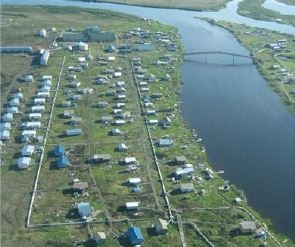

![The ANTHC team includes (left to right) Gavin Dixon; Eric Hanssen; Kevin Ulrich; Sharnel Vale; Tashina Duttle; and [not pictured] Bailey Gambell. Photo from Eric Hanssen, ANTHC, NREL 40424](../../sites/prod/files/styles/borealis_article_hero_respondsmall/public/Fig.4_ANTHCv2.jpg@itok=wCKfZkCu "The ANTHC team includes (left to right) Gavin Dixon; Eric Hanssen; Kevin Ulrich; Sharnel Vale; Tashina Duttle; and [not pictured] Bailey Gambell. Photo from Eric Hanssen, ANTHC, NREL 40424")
The ANTHC team includes (left to right) Gavin Dixon; Eric Hanssen; Kevin Ulrich; Sharnel Vale; Tashina Duttle; and [not pictured] Bailey Gambell. Photo from Eric Hanssen, ANTHC, NREL 40424
Change doesn’t happen on its own. It’s led by dedicated and passionate people who are championing innovative solutions to Alaska’s energy challenges. Alaska Energy Champions is a regular U.S. Department of Energy (DOE) Office of Indian Energy feature spotlighting pioneers of Alaska’s new energy frontier.
In this installment, we caught up with Eric Hanssen, Program Manager of the Alaska Native Health Consortium (ANTHC’s) Rural Energy Initiative for an interview highlighting the entire ANTHC team as a champion of clean, affordable, and sustainable energy development in Alaska. The ANTHC Rural Energy Initiative Program team includes Gavin Dixon, Eric Hanssen, Kevin Ulrich, Sharnel Vale, Tashina Duttle, and Bailey Gambell.
What is your role in championing tribal energy development in Alaska?
ANTHC is a federally recognized, nonprofit tribal health organization that provides statewide services to the more than 150,000 Alaska Native and American Indian people residing in Alaska.
Recognizing the essential role affordable and sustainable energy plays in Alaska’s rural communities, in 2011 ANTHC conceived of the Rural Energy Initiative—a program focused on reducing operational costs of rural sanitation systems and other public infrastructure through energy efficiency and renewable energy solutions.
To date, our team has completed energy efficiency and alternative energy projects in more than 70 rural Alaskan communities. Through our focus on innovation and sustainability, these projects are saving these communities an estimated $2.85 million every year.
What motivates you to do the work you do?
A guiding principle of the Rural Energy Initiative is that basic sanitation should be efficient, sustainable, and affordable. With our focus on sanitation systems and community facilities—often the biggest energy users in Alaska’s remote communities—we work with Alaska’s tribal communities to implement innovative solutions to make public sanitation affordable using a holistic, multifaceted approach that includes:
- Analyzing facility energy usage through detailed energy audits to identify and prioritize energy saving opportunities
- Implementing identified energy improvements via a combination of low-cost energy efficiency retrofits, energy-focused operator training, and the development of appropriate renewable energy technologies
- Providing remote monitoring to track and measure the effectiveness and energy savings resulting from completed energy projects once energy improvements are complete.
Our work with the Native village of Chevak (Chevak) in western Alaska is an excellent example of the difference the Rural Energy Initiative is making. In 2013, the Chevak water and sewer utility was over $200,000 in debt, with no operational reserves. Construction of a sewer energy efficiency project in 2013 and an excess wind-to-heat energy project in 2015, combined with operator training, resulted in huge annual operational savings. The Chevak system now has no debt and an operational reserve of $465,000. Chevak’s customer rates have decreased from $165/month to $121/month—a 27% reduction, and rates are expected to decrease again in the coming year. Our team also has plans to install a community power plant heat recovery system in Chevak, which will further reduce their operating expenses.
What has been the focus of your work or interaction with the Office of Indian Energy?
Our program’s initial energy auditing effort across rural Alaska was made possible by funding through the DOE Energy Efficiency and Conservation Block Grant in 2009. This one-time grant enabled ANTHC to conduct initial energy audits and gather baseline data on 40 rural sanitation systems and other public facilities across the state. With this data, for the first time we were able to shed light on the energy use and opportunities for savings in Arctic and sub-Arctic sanitation systems and those initial audits allowed us to build a prioritized energy roadmap for 40 communities and formulate the Rural Energy Initiative’s systematic approach to bringing energy solutions to rural Alaska.
Since the Office of Indian Energy stationed Givey Kochanowski in Alaska, ANTHC’s Rural Energy Initiative has worked to support of the Office’s visionary efforts to build a strong network of statewide energy-focused service providers—the Alaska Energy Ambassadors. These partnerships have allowed for constructive collaboration, planning, and execution of energy projects, such as the DOE-funded energy efficiency upgrades for sanitation facilities in Selawik, that incorporate regional and community energy priorities.
The data provided by ANTHC’s over 100 detailed energy audits have also played a big role in statewide energy planning and prioritization of future energy investments.
How do you view the current energy challenges and opportunities for Native villages in Alaska?
The burden of high energy costs is an urgent crisis in rural Alaska’s tribal communities, and increased energy efficiency and energy independence are top priorities in most of the communities we work with. High operating costs, largely driven by energy, are threatening to prevent remote communities from using their water and sewer systems and therefore pose a serious risk to public health and quality of life.
Also, due to reduced oil revenues, the State of Alaska has begun cutting community revenue sharing, a funding source that many rural Alaska communities rely on to operate and maintain community infrastructure. This potential loss of revenue, mixed with already high energy costs, will place the sustainability of tribal communities at even greater risk. Additionally, many of the state funding sources our program has used to deliver energy projects to communities are no longer available, making federal support more vitally important than ever.
Our team has identified dozens of energy improvement opportunities across Alaska that we aim to deliver for tribal communities over the next several years—which will only be possible through continued federal support like the funding awarded by the Office of Indian Energy this year.
Tell us about an upcoming project you’re especially excited about.
There are two upcoming projects funded by the Office of Indian Energy that we are excited to get under way:
- DOE Deployment of Clean Energy and Energy Efficiency Projects on Indian Lands— Vacuum Sanitation Energy Efficiency Retrofits Project:
This project will provide deep energy efficiency retrofits identified through past ANTHC energy audits for sanitation systems in Alakanuk, Kotlik, and Noorvik. A variety of energy efficiency improvements will be implemented to reduce the consumption of diesel fuel and electricity in each community’s sanitation system. The retrofits will focus on improvements to the very energy-intensive practice of operating vacuum sewer systems in rural Alaska, which use large amounts of energy for pumping and heating to collect sewage from the community and dispose of it in a way that protects human health and the environment.Currently, these three sanitation systems use a combined 31,688 gallons of diesel fuel per year for heating and 584,748 kilowatt-hours (kWh) of electricity at a total cost of $455,274. The retrofits will reduce the total electric consumption of these facilities by an estimated 214,843 kWh and reduce their total diesel fuel consumption by 20,349 gallons—a 48.1% reduction in total energy use. The project is estimated to save the three communities a combined total of $202,000 in sanitation operating costs every year.
- Establishment of an Inter-Tribal Technical Assistance Energy Providers Network— Technical Assistance for Rural Alaska Tribal Energy Solutions:
This project will enable ANTHC to provide technical assistance to rural tribal communities across all regions of Alaska, targeting public infrastructure. Goals of the project include developing reliable engineering documents and appropriate financial assessments to assist tribes in seeking grant and loan financing to develop energy projects.We will also be able to work with communities across Alaska to deliver impactful technical assistance in a way that maximizes the benefits of DOE’s investment. We are excited about the dozens of solid, beneficial energy projects that will be developed for Alaska Native communities through this technical assistance.
Our goal is that at least 50% of the projects identified though ANTHC’s technical assistance acquire funding for implementation.
What’s your vision for the future of energy in rural Alaska?
We aim to assist every tribal/rural community in the state in pursuit of our goal of making basic sanitation efficient, sustainable, and affordable. Through our work in conducting detailed energy audits for scores of facilities across rural Alaska and our ongoing collaboration with our statewide network of energy partners, we have identified numerous opportunities to continue to deliver energy improvements over the next several years. Our four-year plan, if funding allows, aims to enable:
- 80 communities to receive energy audits to community facilities
- 40 communities to receive renewable energy feasibility studies
- 80 communities to receive energy efficiency improvements
- 34 communities to receive alternative energy system engineering designs
- 30 communities to receive implemented alternative energy systems
- 80 communities to receive remote monitoring systems.
What do you consider necessary to drive meaningful change?
Our team believes that all energy solutions for Alaska’s rural communities need to start with community engagement. Working hand-in-hand with communities to define priorities and engage local energy champions is critical to ensuring the long-term effectiveness and sustainability of delivered energy projects.
We also feel that a holistic approach to problem solving needs to be a continued focus for Alaska’s statewide energy-focused service providers. Collaboration among local, regional, tribal, state, and federal partners will produce the most impactful energy solutions for Alaska’s tribal communities. This is why we are so excited about the Inter-Tribal Technical Assistance Energy Providers Network established through funding by the Office of Indian Energy. This type of collaborative approach will serve to enhance the synergy among Alaska-based technical assistance providers working to deliver practical solutions and produce tangible benefits to Alaska’s rural communities.
Finally, we feel it’s vitally important to always keep an eye on the human aspects of energy solutions for rural Alaska. Local capacity building is critical to being able to sustain clean energy solutions in our tribal communities. Our team is working to lead the way on this front by embracing the importance of energy-focused training as part of our services. In addition to technical capacity building, we are working to drive an increased focus on building rural Alaska’s local administrative knowledge in the realm of energy. This will help ensure that the business of clean energy and energy efficiency is managed most effectively at the local level.